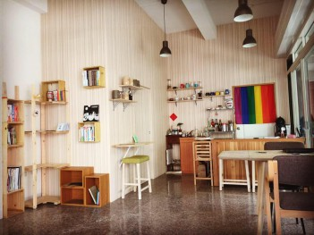

資源地圖
創意啟蒙
創業團隊
新創公司
卓越成長
常見問題
空間
整合政府與民間所提供的創業空間，並分為五種類別。
資料來源：
青年創業及圓夢網
｜取得時間：2016/05/22
開啟創業之路
空間
Leben Home 共饗空間

Leben Home 共饗空間
創業空間類型：Co-working space 共同工作空間
所屬單位：民間單位 - Leben Home 生活家
招募團隊類型：文化創意,社會企業,創新服務
建築類型：店面攤位
建造材質：鋼筋混凝土
建物現況：良好
樓別/樓高：1樓
使用坪數：15坪
聯絡人資訊
聯絡人：Mag
連絡電話：0939-555-074
聯絡e-mail：mag2520@gmail.com
官方網站：
https://www.facebook.com/leben.ain
進駐條件
進駐/使用人數：1~12人
價格方案：面議
使用時間：每日10:00-20:30
空間介紹
Leben Home共饗空間，擁有的不只是食物的色香味，還有空間、藝術、想法、理念、使命，最重要的是每個人之間想表露的意境，都可以呈現在這個代表性的空間裡，共同的做自己的品牌。Leben Home共饗空間，將以自我創造共同平台出發為目的，讓每個人都可以快樂的Be Yourself：
(一) 打造一個舒適的生活空間，讓人在此享受工作、享受時光、享受美食、享受熱情、享受氣氛、享受知性閱讀、享受旅行、享受犧牲、享受我們所想要的享受。
(二) 營造更多友善環境資源空間，如環保、彩虹同志、弱勢身障族群等，舉辦藝術展覽、音樂表演、藝文講座與權益發聲展覽，亦藉由社會企業模式從旁延伸協助相關需要幫助的族群。並主力創造身障者就業與青年實習機會。
地圖